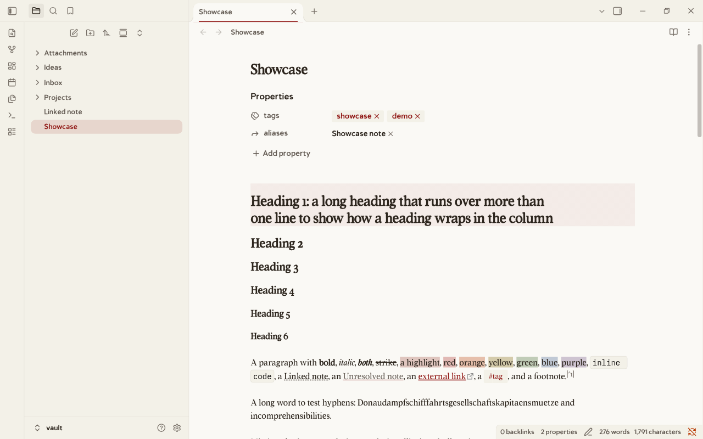
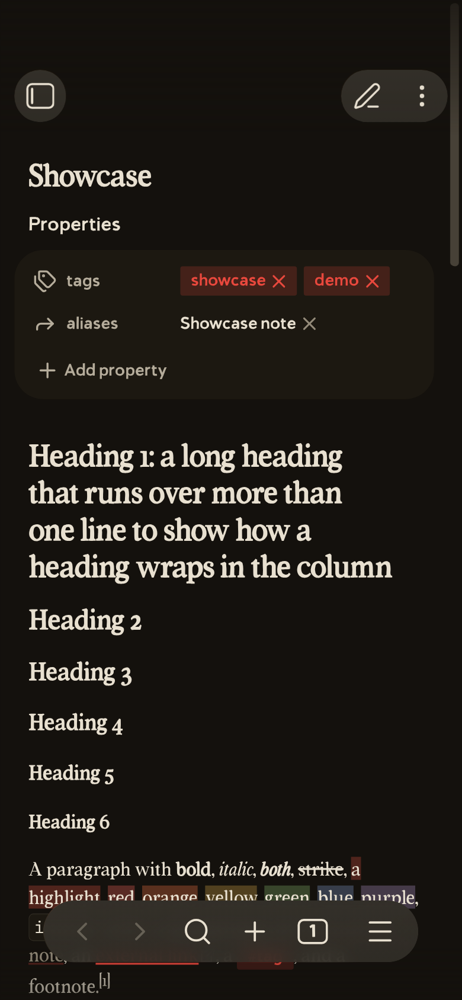
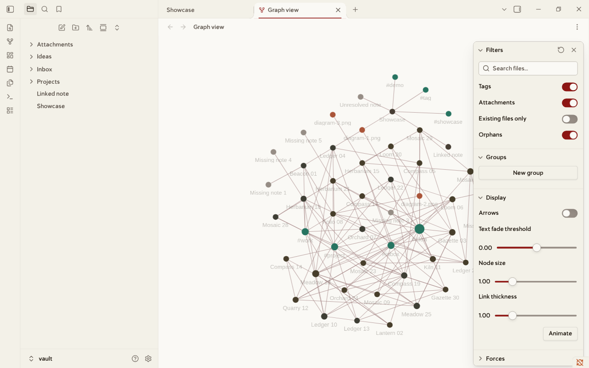
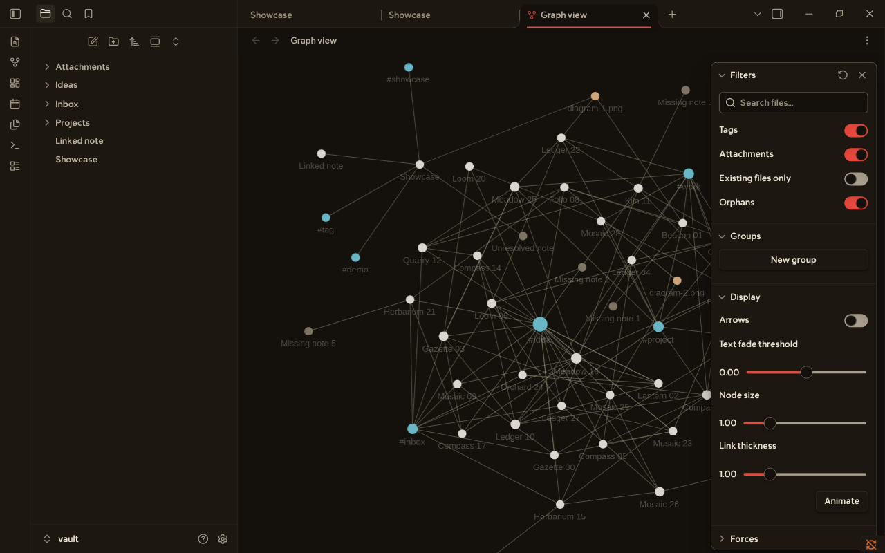

Views
Every image comes from a demo vault. scripts/take_screenshots.py makes them again.




Palette
The theme has 30 named colors in src/30-light.css and src/40-dark.css. Each pair below is the light color, then the dark color. A color change there reaches every rule. Text colors reach 4.5 to 1 on the page, with three known exceptions that docs/contrast.md lists.
Ground
ground#faf9f5 · #14110d
panel#f3f1e8 · #1c1811
panel-alt#efece0 · #221c14
Ink
ink#2c251d · #e8e0d0
muted#655d55 · #b5ac9b
faint#6f675f · #938a79
sand#968d85 · #a89f8e
Accent
accent#901714 · #e8483d
accent-hover#733331 · #f2685d
Status
error#b83800 · #ff7a45
warning#7a4e00 · #e0b04a
success#3a6329 · #8fbf6f
Base
red#a8231f · #ff6b5e
orange#b83800 · #ff7a45
yellow#7f6000 · #e0b04a
green#3a6329 · #8fbf6f
cyan#2f5d6e · #7fb3c4
blue#3b5a8a · #8aa6d6
purple#6b4a7d · #b99ad0
pink#a04668 · #e08aa8
Graph
graph-node#473e34 · #dcd6d0
graph-tag#277461 · #69b6c6
graph-attachment#aa5539 · #cda47a
graph-unresolved#968d85 · #7d7464
graph-line#968d85 · #a89f8e
graph-highlight#2c251d · #e8e0d0
Install
- Copy the theme into a vault. The folder
.obsidianmust exist in the vault. - Open Settings, Appearance. Choose Lexmechanic under Themes.
- Optional: turn on the snippets
lexmechanic-extrasandlexmechanic-fun, and any of the 32 presets.
git clone https://github.com/Orpheus-21/lexmechanic-theme.git cd lexmechanic-theme scripts/install.sh /path/to/vault --presets
On Windows, run .\scripts\install.ps1 -Vault "C:\path\to\vault" -Presets. It is not tested on Windows. The plugin BRAT can install the theme alone.
Limits
- Obsidian
- Installer 1.4.13 or newer. The theme uses
color-mix(), which needs Chromium 111. - Tested
- Obsidian 1.14.4 on Linux. Windows, macOS, Android, and iOS are not tested.
- Fonts
- Volume Tc has about 175 characters. Other characters use a fallback font.
- Graph labels
- Obsidian fixes the font of the labels. The preset
lexmechanic-graph-labelsreplaces it. - Options
- The plugin Style Settings shows the accent, the column width, the fonts, the heading sizes, and the graph colors.